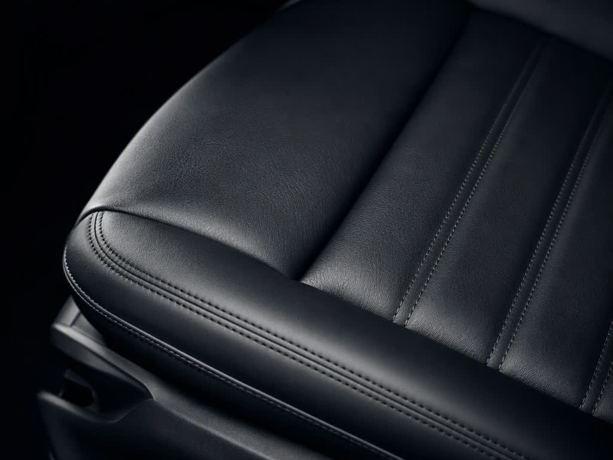
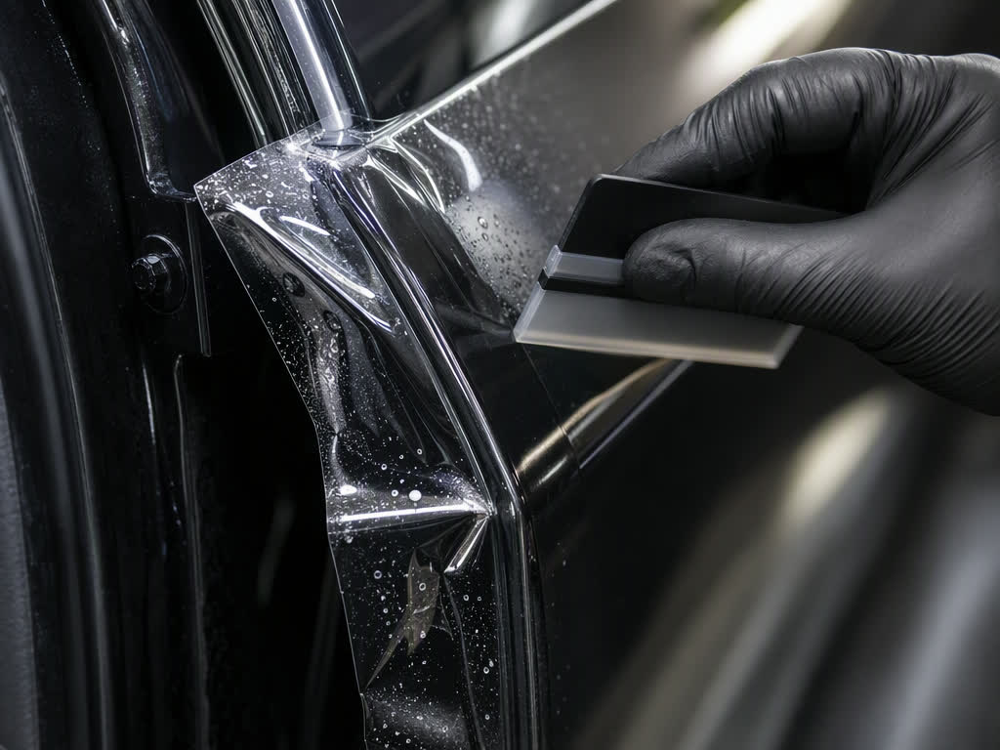

01
Химчистка салона
Разбор кресел и порогов, экстракция грязи из поролена, а не «смахнули пену и уехали». Потолок без отклейки, кожа с пропиткой, запах уходит за один визит.
- 6–8 часов · готов к продаже за день
- Защитный состав на ткань и кожу
- Озон и обработка кондиционера — опцией
от 7 500 ₽
Записаться на химчистку
